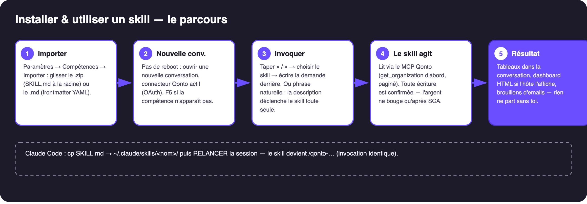
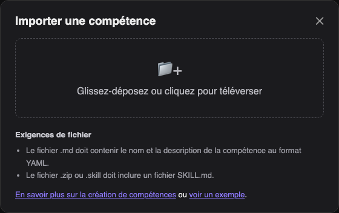
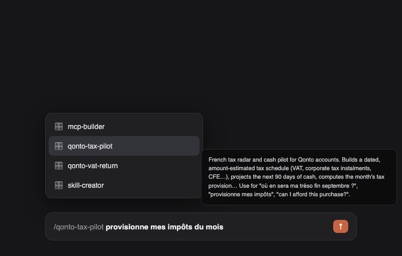

Du fichier au premier prompt en 2 minutes — claude.ai, Claude Desktop ou Claude Code.

🎬 En vidéo : l'import en 22 secondes.
| Prérequis | Détail |
|---|---|
| Le fichier du skill : .md OU .zip | Le .md seul suffit s'il contient name et description en frontmatter YAML (c'est le cas de tous les skills du dépôt). Le .zip doit contenir un SKILL.md à la racine — les zips prêts à l'emploi sont dans le dossier skill/ de chaque skill. |
| Connecteur Qonto branché | Paramètres → Connecteurs → Qonto → connexion OAuth (le mot de passe n'est jamais partagé). Sans lui, le skill s'installe mais n'a rien à lire. |
| MCP optionnels selon le skill | Gmail, Drive, Datagouv, Shopify… — détectés dynamiquement, le skill dégrade proprement s'ils manquent. |
Paramètres → Compétences → Importer une compétence, puis glisser le .zip (ou le .md) :

Claude lit le frontmatter YAML et enregistre la compétence.
Dans une nouvelle conversation (aucun redémarrage nécessaire — F5 + nouveau chat si la compétence n'apparaît pas), tape /, choisis le skill, écris ta demande derrière — ou écris simplement ta phrase en langage naturel, la description du skill le déclenche toute seule :

SKILL.md dans ~/.claude/skills/<nom-du-skill>//qonto → le skill apparaît dans l'autocomplétionPROCEDURE)| Piège | Solution |
|---|---|
.md sans frontmatter YAML → refusé | Utiliser les fichiers du dépôt (tous conformes) |
SKILL.md dans un sous-dossier du zip → refusé | Il doit être à la racine (les zips fournis sont conformes) |
| Skill installé mais connecteur Qonto absent | Brancher le connecteur d'abord — le skill tourne à vide sinon |